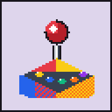

Bauhaus Geometric Pixel Art / Isometric
Arcade Controller — BGM Composer
Google Flow Musicや各種音楽生成AI向けに、ゲームBGMのプロンプトと構成タイムラインを直感的にデザインするツールです。
CRT: OFF
AUTO SCREEN
PRESETS / プリセット
SAVE & LOAD
現在設定を保存
JSON書き出し
JSON読み込み
共有URLコピー
TRACK TITLE / 曲名・テーマ
CONCEPT
曲名・世界観 (プロンプトやプリセットに連動・反映されます)
🎲 ランダム曲名
SCENE & MOOD / 雰囲気
INSTRUMENTS / 楽器・音色
SOUND EFFECTS / 効果音
効果音の出現頻度
使わない (純粋な音楽のみ)
たまに挟む (推奨)
頻繁に散りばめる (賑やか)
TEMPO & KEY / テンポ・調性
テンポ (BPM)
120
BPM
和声・スケール (調性)
明るいメジャー (高揚感・冒険)
甘くドリーミーなメジャー7th (Hyper-kawaii・パステル)
緊張感のあるマイナー (緊迫・ダンジョン)
和風/かわいいペンタトニック (ポップ・東洋風)
不穏なディミニッシュ (ボス・怪奇)
勇壮なドリアン旋法 (中世ファンタジー・英雄譚)
▶ 8bit試聴 (BPM・調性確認)
VOLUME
RESTRAINT / 盛り上がり抑制
抑制レベル (AIが勝手に盛り上げすぎるのを防ぐ)
指定しない (AIにおまかせ)
ゆるめに抑える (緩やかな起伏)
しっかり抑える (完全フラット・ゲームループ用)
具体的な抑制ルール (複数選択可)
NEGATIVE / 除外指定
曲に含めたくない要素 (ネガティブプロンプト)
FORMAT / 構成・出力形式
曲の長さ (タイムライン計算用)
対象AIサービス
Google Flow Music (自然言語重視)
Suno / Udio (タグ指示併用形式)
シンプル文章形式
プロンプト本文に構成タイムラインを埋め込む
スクリプトを生成
🎲 おまかせ
リセット
GENERATED PROMPT / 生成スクリプト
English prompt (推奨)
日本語プロンプト (確認用)
※音楽AIは英語プロンプトの認識精度が高い傾向があります
プロンプトをコピー
NEGATIVE PROMPT / 除外プロンプト
AIサービスの「Negative Prompt / Exclude」欄に貼り付けます
除外指示をコピー
STRUCTURE TIMELINE / 構成タイムライン
スクリプトを生成すると、秒数配分と構成案がここに表示されます。
コピーしました